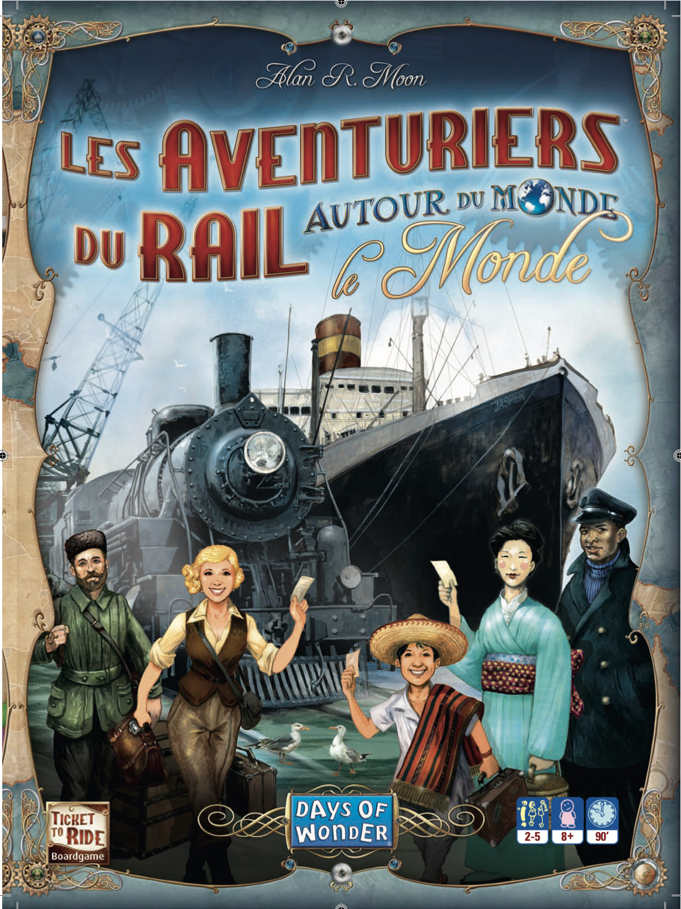
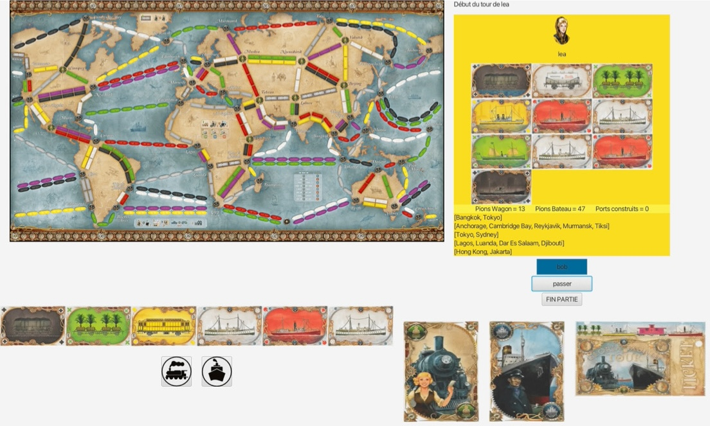

Ce projet, réalisé en première année de BUT informatique, consistait à produire une implémentation en Java et JavaFX du jeu de plateau "Aventuriers du Rail - Autour du Monde".
Ce projet a été conçu pour être réalisé de façon incrémentale en 3 phases :
Phase 1 : Développement de la mécanique du jeu en Java
Phase 2 : Mise en œuvre des algorithmes de graphes afin de définir des stratégies de jeu pour les joueurs
Phase 3 (suite de la Phase 1) : Implémentation d’une interface graphique sous JavaFX

RESSOURCES
Projet en binôme
Développement orienté objets
Qualité de développement
Algorithmes de graphes
Interfaces homme-machine
CONTEXTE
Durée : 4 mois et demi (3 parties)
Évaluation : par tests unitaires ainsi qu’une soutenance à la fin du projet.
Attente : développement du jeu en java/javaFX
Contrainte : respecter toutes les règles du jeu

Voici le résultat de notre interface, j'ai pu m'occuper de réaliser le cas où le joueur pose ces cartes pour placer des wagons, mais aussi le cas où il passe son tour et pour finir, les cartes de pioches.
Relations entre les réalisations personnelles et le programme de BUT Informatique
CE 1.01 - Réaliser : respecter les besoins décrits par le client.
Ex : Respecter les règles du jeu
CE 1.03 - Réaliser : appliquer les principes algorithmiques.
Ex : Séparer les différents aspects en plusieurs classes (Joueur, Jeu, héritage pour Routes afin d'éviter la redondance...).
CE 2.02 - Optimiser : Recenser les algorithmes et les structures de données usuels.
Ex : Utiliser l'algorithme de Dijkstra pour calculer la route la plus longue.
AC 11.02 - Réaliser : élaborer des conceptions simples.
Acquis
Ex : Réaliser une maquette pour concevoir et avoir un aperçu simple de l'application.
AC 11.03 - Réaliser : faire des essais et évaluer leurs résultats en regard des spécifications.
Acquis
Ex : Faire des tests unitaires et observer les résultats.
AC 12.03 - Optimiser : formaliser et mettre en œuvre des outils mathématiques pour l’informatique.
Acquis
Ex : Utilisation de graphe et de formules mathématiques pour les routes et les calculs de points.